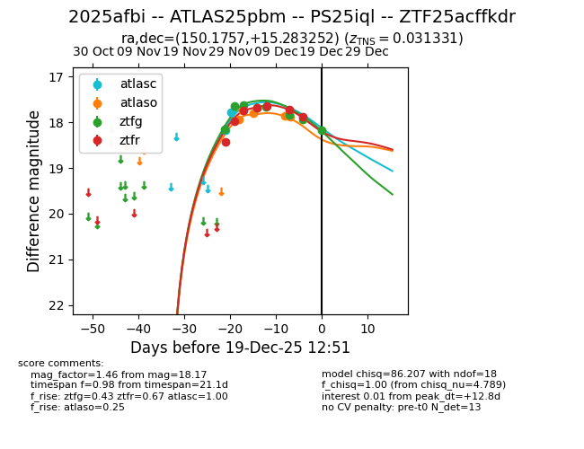
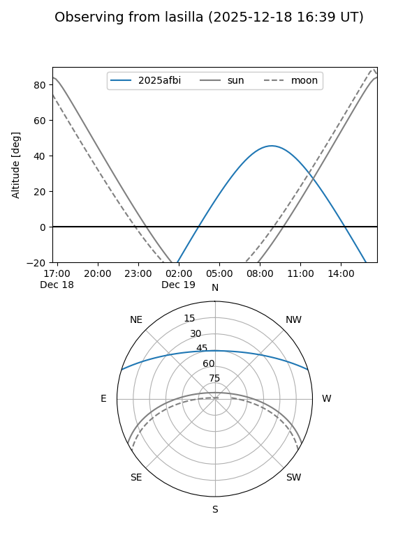
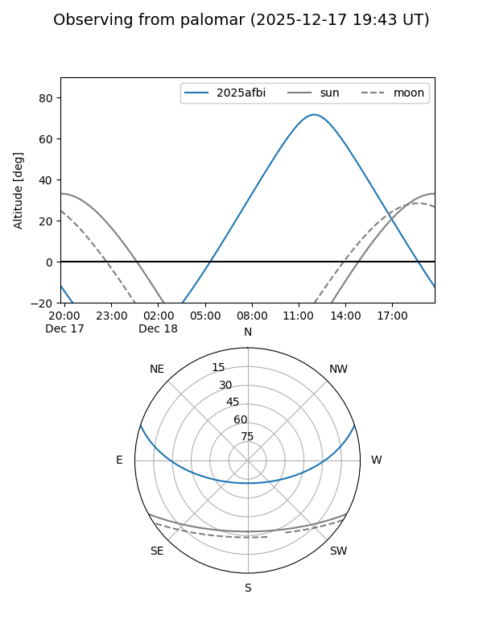
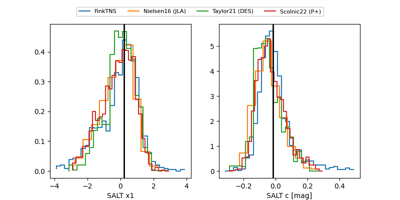

2025afbi
Target 2025afbi at 2025-12-21 13:27
Aliases and brokers:
FINK: fink-portal.org/ZTF25acffkdr
Lasair: lasair-ztf.lsst.ac.uk/objects/ZTF25acffkdr
ALeRCE: alerce.online/object/ZTF25acffkdr
TNS: wis-tns.org/object/2025afbi
YSE: ziggy.ucolick.org/yse/transient_detail/2025afbi
alt names
ZTF25acffkdr (ztf,fink_ztf)
2025afbi (tns,yse)
ATLAS25pbm (atlas)
PS25iql (panstarrs)
Coordinates:
equatorial (ra, dec) = 150.1757,+15.28325
equatorial (HMS+DMS) = 10:00:42.16,+15:16:59.71
galactic (l, b) = (220.6602,+48.70239)
Flags:
Photometry:
last atlasc=17.79, atlaso=17.89, ztfg=18.24, ztfr=18.06
2 atlasc, 5 atlaso, 9 ztfg, 8 ztfr detections
Lightcurve

Visibility


Additional plots
